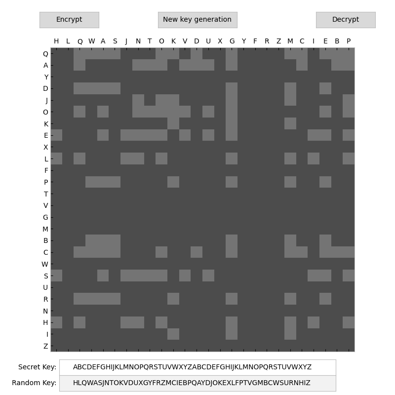
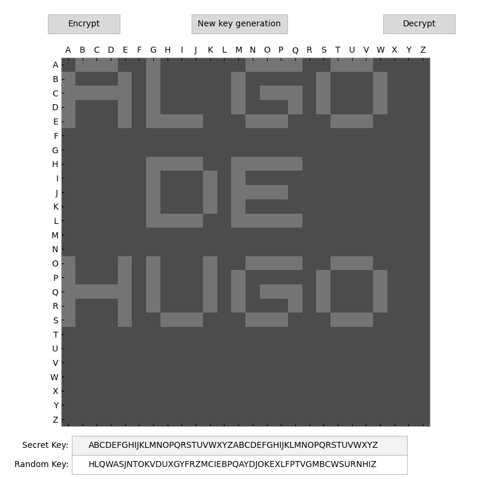
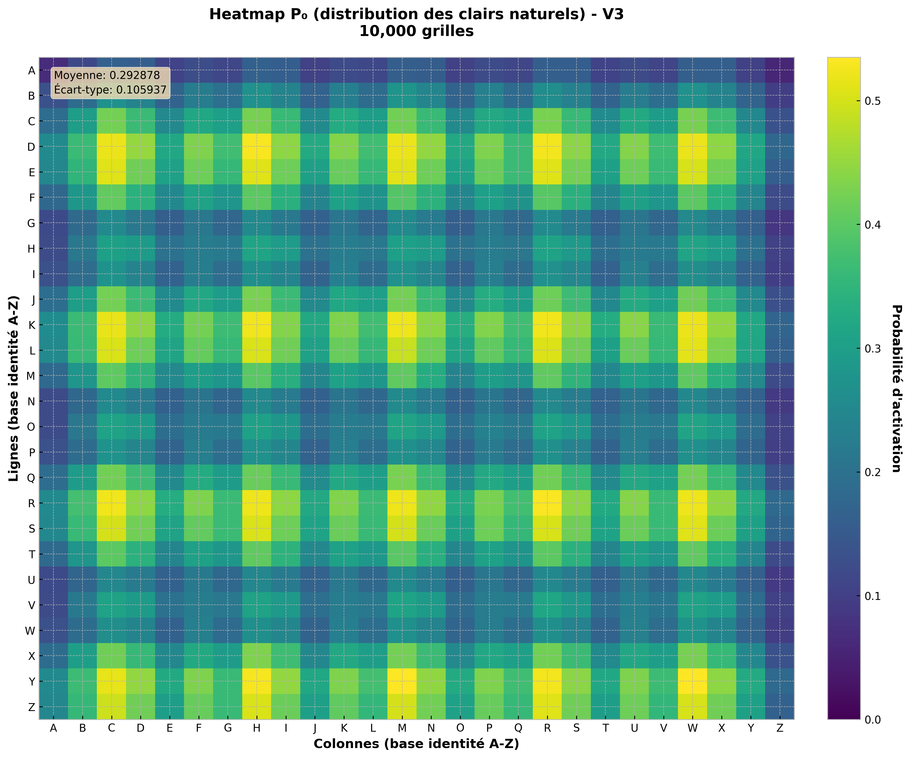
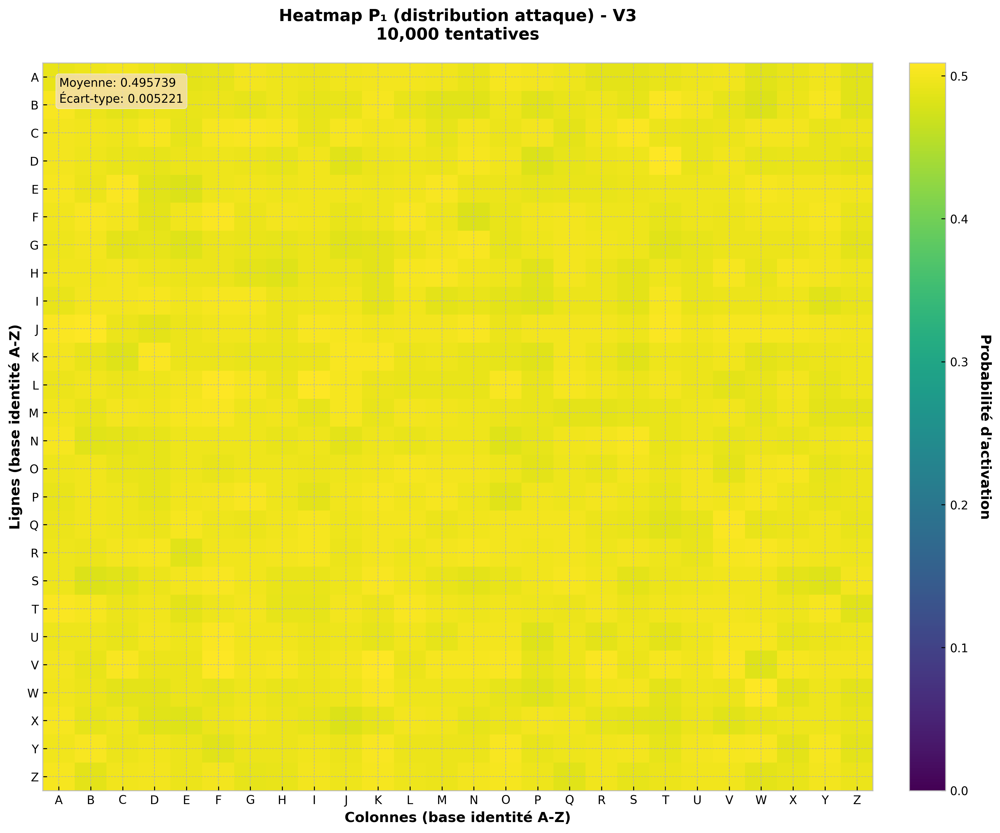
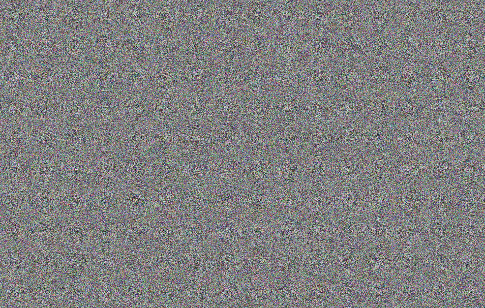
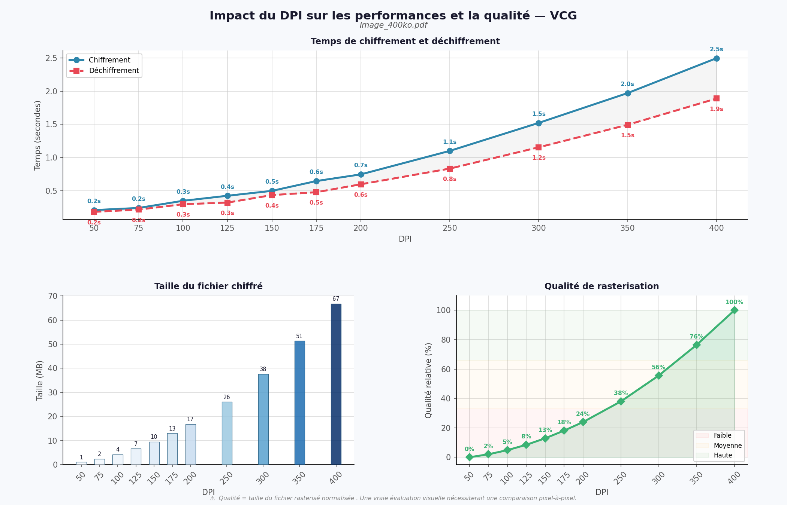

Présentation générale
VCG (Visual Cipher Grid) est un algorithme de chiffrement symétrique original, développé dans le cadre d'une démarche de recherche et d'expérimentation cryptographique. Le principe fondateur du système repose sur la transformation de l'information en une représentation bidimensionnelle structurée sous forme de grille 26×26, correspondant au produit cartésien de l'alphabet latin avec lui-même.
Contrairement aux algorithmes classiques qui opèrent directement sur les octets ou les bits du message, VCG encode d'abord le message dans une représentation matricielle de bigrammes. L'information n'est donc pas portée directement par une séquence de caractères lisibles, mais par la structure géométrique et statistique de la distribution des cellules activées dans la grille.
La transformation cryptographique repose sur trois mécanismes combinés : une représentation spatiale du message dans la grille, des permutations secrètes de lignes et de colonnes dérivées de la clé, et un masquage XOR par un vecteur d'initialisation aléatoire. Le projet a évolué vers une version capable de traiter des documents couleur complets par découpage en tuiles 26×26, avec un mécanisme de chaînage entre tuiles inspiré du mode CBC.
Ce projet s'inscrit dans une démarche de recherche cryptographique rigoureuse : ses propriétés de sécurité ont été évaluées par des tests statistiques formels, dont une attaque de Shannon établissant la propriété IND-CPA au sens statistique.
Principe fondamental de la grille
La structure centrale de VCG est une grille binaire de dimension 26×26, dont les lignes et les colonnes sont indexées par les 26 lettres de l'alphabet latin (A à Z). Chaque cellule Gi,j de la grille correspond à un bigramme, c'est-à-dire une paire ordonnée de deux lettres (i, j) ∈ Σ². Le nombre total de bigrammes possibles est 26² = 676.
Pour représenter un message textuel dans la grille, chaque caractère est encodé à l'aide d'un patron de pixels 4×5 (analogue à une fonte bitmap). Ces patrons sont placés dans la grille avec des offsets horizontaux et verticaux, permettant d'écrire plusieurs lettres dans la même grille (jusqu'à 20 caractères par grille dans l'implémentation de référence). Les cellules correspondant aux pixels actifs du motif sont activées à 1.
La grille ainsi construite est appelée grille claire P. Elle constitue la représentation canonique du message dans la base identité — c'est-à-dire avant toute application de permutation ou de masquage. Visuellement, si l'on affichait cette grille, on pourrait y lire le message d'origine sous la forme d'un ensemble de motifs géométriques.
Un ensemble de bigrammes activés dans la grille peut ainsi dessiner une lettre, un mot, ou tout motif arbitraire. C'est cette propriété de représentation visuelle qui est au cœur de l'approche VCG.
Structure de la clé secrète
La clé secrète du système VCG est composée de deux permutations indépendantes de l'alphabet de 26 lettres, formant ainsi un élément du groupe :
où Kc est la permutation des colonnes et Kr est la permutation des lignes de la grille. En pratique, la clé est représentée sous la forme d'une chaîne de 52 caractères : les 26 premiers définissent l'ordre des colonnes, les 26 suivants l'ordre des lignes.
L'espace de clé est défini par :
Intuitivement, la clé ne modifie pas la quantité d'information présente dans la grille : le nombre de cellules activées reste identique avant et après permutation. En revanche, elle réorganise la position de chaque cellule de manière à rendre la structure du motif illisible sans la connaissance de la permutation inverse. Une attaque exhaustive sur cet espace est computationnellement hors de portée.
Opérateur de permutation secrète PS
L'opérateur de permutation secrète PS est le cœur de la transformation cryptographique. Appliqué à une grille G, il réordonne simultanément les lignes selon Kr et les colonnes selon Kc :
La permutation inverse PS−1 satisfait :
Propriétés formelles de PS :
- Conservation des valeurs : PS ne modifie pas les valeurs des cellules, uniquement leurs positions. Le nombre de cellules activées est invariant.
- Réversibilité exacte : la connaissance de la clé correcte permet de reconstruire exactement la grille d'origine.
- Bijection : PS est une bijection sur l'ensemble des grilles 26×26 ; deux grilles différentes ne peuvent pas avoir la même image par PS.
Formules de chiffrement et de déchiffrement
Trois versions successives de l'algorithme ont été définies, chacune apportant un niveau de robustesse accru. Le tableau ci-dessous en donne une vue synthétique :
| Version | Chiffrement | Déchiffrement | Mécanisme |
|---|---|---|---|
| V1 | C = PS(P) |
P = PS⁻¹(C) |
Permutation seule |
| V2 | C = PS(IV ⊕ P) |
P = PS⁻¹(C) ⊕ IV |
XOR avec IV + permutation |
| V3 ★ | C = PS(IV ⊕ PS(P)) |
P = PS⁻¹(PS⁻¹(C) ⊕ IV) |
Double permutation + masquage |
V1 — Permutation seule
Chiffrement
Déchiffrement
Application directe de la permutation secrète. Vulnérable à une analyse structurelle si le taux d'activation de la grille est connu ou prévisible.
V2 — XOR + permutation
Chiffrement
Déchiffrement
L'ajout d'un vecteur d'initialisation aléatoire introduit de la variabilité : deux chiffrements du même message produisent des grilles différentes.
V3 — Double PS + masquage ★
Chiffrement
Déchiffrement
Version principale du système. La double application de PS encadre le masquage XOR, rendant toute inversion partielle sans la clé plus difficile.
La version V3 est la version principale mise en avant dans ce projet. L'enchaînement PS → XOR → PS signifie qu'un attaquant qui inverserait partiellement la seconde permutation obtiendrait IV ⊕ PS(P) — une valeur masquée par IV et déjà permutée — et non directement le clair. La double application de PS combinée au masquage aléatoire rend l'analyse structurelle nettement plus difficile. Les versions V1 et V2 ont été abandonnées car elles présentaient une résistance insuffisante aux analyses statistiques.
Fonctionnement pour un texte
Le chiffrement d'un message textuel passe par un pipeline de transformation en plusieurs étapes, depuis la représentation canonique jusqu'à la grille chiffrée finale.
Pipeline de chiffrement d'un texte
- 1Texte clair : le message est lu en entrée sous forme de chaîne de caractères.
- 2Encodage en patrons 4×5 : chaque caractère est associé à un patron bitmap de 4 colonnes × 5 lignes, représentant sa forme visuelle dans la grille.
- 3Placement dans la grille 26×26 : les patrons sont positionnés dans la grille avec des offsets horizontaux et verticaux calculés pour éviter les chevauchements. Une grille peut contenir jusqu'à 20 caractères.
- 4Génération des bigrammes actifs : pour chaque cellule activée, le bigramme correspondant est identifié. La grille claire P ∈ {0,1}²⁶ײ⁶ est construite.
- 5Génération du vecteur d'initialisation : un IV aléatoire de même dimension que la grille est généré selon une distribution de Bernoulli (p = 0.5).
- 6Application de PS(P) : première permutation secrète appliquée à la grille claire.
- 7Masquage XOR : la grille permutée est XORée avec IV.
- 8Application finale de PS : seconde permutation secrète produisant la grille chiffrée C.
- 9Sérialisation : la grille chiffrée C est convertie en séquence de bigrammes (positions des cellules actives). Le couple (C, IV) est transmis.
Le déchiffrement suit le pipeline inverse : reconstruction de la grille chiffrée à partir des bigrammes, application de PS⁻¹, XOR avec IV, seconde application de PS⁻¹, puis lecture du motif résultant pour reconstruire le texte clair.
Il convient de noter que l'ordre des bigrammes transmis n'affecte pas la reconstruction de la grille : le texte chiffré peut être vu comme un ensemble non ordonné de bigrammes, ce qui offre une propriété supplémentaire d'indépendance à l'ordre de transmission.
Fonctionnement pour un document ou une image couleur
Le système VCG a été étendu pour traiter des documents visuels complets (images raster et PDF). Ce mode d'utilisation constitue une extension pratique et significative du concept de grille au chiffrement de données visuelles en couleur.
Principe du mode couleur
Dans le mode couleur, chaque pixel est représenté par ses trois composantes RGB. L'algorithme opère sur des blocs (tuiles) de dimension 26×26 pixels, correspondant exactement à la structure de la grille VCG. Pour chaque tuile et chaque composante de couleur, la transformation V3 est appliquée indépendamment. Les formules de chiffrement d'une tuile couleur sont :
(2) Y = mask ⊕ C₁ ← masquage par un masque pseudo-aléatoire
(3) C = PS(Y) ← seconde permutation → bloc chiffré final
Le déchiffrement applique les opérations en ordre inverse :
(2) C₁ = Y ⊕ mask ← suppression du masque
(3) P = PS⁻¹(C₁) ← inversion de la première permutation → bloc clair reconstruit
Masque et chaînage de type CBC
Le masque utilisé est pseudo-aléatoire et n'est pas indépendant d'un bloc à l'autre. Un mécanisme de chaînage inspiré du mode CBC est appliqué : le dernier bloc chiffré d'une tuile influence le masque de la tuile suivante, et le dernier bloc d'une page influence le masque de la page suivante. Ce chaînage évite que deux blocs identiques en clair produisent des blocs identiques en chiffré — une vulnérabilité connue du mode ECB.
Résumé du pipeline document
- 1Conversion au format raster : le document est converti en PDF si nécessaire, puis chaque page est rasterisée en image RGB à la résolution souhaitée (paramètre DPI).
- 2Padding : chaque page est complétée (padding) pour que ses dimensions soient des multiples de 26 pixels.
- 3Découpage en tuiles 26×26×3 : la page est découpée en blocs de 26×26 pixels (3 composantes couleur). Chaque tuile est traitée indépendamment.
- 4Chiffrement par tuile : pour chaque tuile et chaque composante RGB, la transformation V3 couleur est appliquée avec mise à jour du masque de chaînage.
- 5Stockage lossless : les pages chiffrées sont encodées en PNG (compression sans perte) et archivées dans un fichier
.cgrid. La structure archive garantit l'absence de dégradation cryptographique. - 6Prévisualisation optionnelle : un aperçu PDF peut être généré à partir des pages PNG chiffrées. Il s'agit d'une visualisation uniquement ; le format cryptographique de référence reste l'archive
.cgrid. - 7Déchiffrement : les pages PNG sont extraites de l'archive, les tuiles déchiffrées dans l'ordre inverse avec le même masque de chaînage, puis les pages sont recomposées et l'image originale reconstruite.
Tests statistiques
Des campagnes de tests statistiques ont été menées sur un grand nombre de grilles générées aléatoirement afin d'évaluer les propriétés de diffusion du système VCG. L'objectif est de vérifier que les structures visuelles présentes dans la grille claire disparaissent statistiquement dans la grille chiffrée, et qu'aucun biais exploitable n'est détectable sur les 676 positions de la grille.
Métriques analysées
- Distribution des cellules activées : fréquence d'activation par position sur l'ensemble des 676 cellules de la grille.
- Moyenne et écart-type : indicateurs de centralité et de dispersion de la distribution d'activation.
- Coefficient de variation : rapport écart-type / moyenne, permettant une comparaison normalisée entre grilles claires et chiffrées.
- Entropie empirique : mesure de l'uniformité de la distribution d'activation par position.
- Heatmaps de probabilité : représentation visuelle de la distribution des activations par position dans la grille 26×26.
- Histogrammes de distribution : répartition des fréquences d'activation sur les 676 positions, comparant grilles claires, intermédiaires et chiffrées.
Protocole de comparaison
Les analyses portent sur trois ensembles de grilles comparés côte à côte :
- Grilles claires P : distributions caractéristiques, non uniformes, révélant les motifs des caractères encodés.
- Grilles intermédiaires (IV ⊕ P ou IV ⊕ PS(P)) : premier niveau de masquage.
- Grilles chiffrées finales C₂ ou C₃ : distributions observées après application de la transformation complète.
Les résultats statistiques clés obtenus sur un ensemble de 10 000 grilles sont les suivants :
des grilles claires P₀
des grilles chiffrées P₁
des grilles claires
des grilles chiffrées
La réduction de l'écart-type d'un facteur supérieur à 20 entre grilles claires et grilles chiffrées indique que la distribution des activations est nettement uniformisée après chiffrement. La moyenne s'approche de 0.5, valeur attendue pour une distribution de Bernoulli d'uniformité maximale.
| Mesure | Valeur observée | Interprétation |
|---|---|---|
| Écart moyen |P₀ − P₁| | 0.2051 |
Différence de distribution nette entre clair et chiffré |
| Écart maximum |P₀ − P₁| | 0.4284 |
Certaines positions très caractéristiques du clair sont totalement masquées |
| Statistique χ² (chiffrés) | 189.73 |
Largement inférieure au seuil critique |
| Seuil χ²₀.₉₉(675 ddl) | 763.40 |
Seuil critique à 99% pour 675 degrés de liberté |
| p-valeur | 1.000 |
Aucune déviation significative par rapport à une distribution uniforme |
La statistique χ² observée sur les grilles chiffrées (189.73) est largement inférieure au seuil critique à 99% (763.40). L'hypothèse d'uniformité de la distribution des cellules activées n'est pas rejetée, ce qui indique l'absence de biais statistique détectable dans la distribution des chiffrés.
Analyse de sécurité et propriétés observées
a) Réversibilité correcte
La propriété fondamentale du système est sa réversibilité exacte. Il a été vérifié formellement et expérimentalement que :
pour toute grille clair P, toute clé K et tout vecteur d'initialisation IV. Cette propriété est une conséquence directe de la bijectivité de PS et de l'involutivité de l'opérateur XOR.
b) Uniformisation statistique
Le masquage XOR combiné à la double permutation vise à rendre les distributions observées compatibles avec un comportement uniforme. Les tests statistiques montrent que les grilles chiffrées produites par V3 présentent une distribution d'activation proche de la distribution attendue pour un processus aléatoire uniforme (Bernoulli, p = 0.5).
c) Évaluation par pseudo-brute-force
Une procédure d'évaluation expérimentale a été mise en place : un couple (C, IV) est produit avec la vraie clé, puis on teste un grand nombre de pseudo-clés aléatoires K' tirées uniformément dans S₂₆ × S₂₆. Pour chaque fausse clé, on déchiffre le chiffré et on obtient un pseudo-clair P' = PS'⁻¹(PS'⁻¹(C) ⊕ IV). L'analyse des distributions statistiques de ces pseudo-clairs ne révèle pas de structure exploitable, ce qui est cohérent avec l'absence de biais détectable.
d) Indistinguabilité IND-CPA
Les expérimentations réalisées démontrent que le système VCG V3 satisfait la propriété d'indistinguabilité sous attaque à clair choisi (IND-CPA) dans le modèle statistique étudié. L'attaque de Shannon implémentée ne permet pas de distinguer les chiffrés VCG d'une distribution aléatoire uniforme, ni d'extraire la moindre information exploitable sur le clair à partir d'un couple intercepté (C, IV). La propriété IND-CPA est établie au sens statistique : aucune stratégie d'attaque fondée sur l'analyse fréquentielle ne permet à un adversaire de distinguer deux chiffrés correspondant à deux messages distincts de son choix.
Analyse de Shannon et preuve statistique IND-CPA
Afin d'évaluer les propriétés de diffusion du système, une analyse statistique inspirée des critères formulés par Claude Shannon a été implémentée. L'objectif est de vérifier si un attaquant ayant accès à un couple (C, IV) intercepté peut extraire de l'information sur le message clair en analysant la distribution statistique des déchiffrements produits par de nombreuses permutations aléatoires.
Protocole expérimental
L'expérience repose sur la construction de deux distributions empiriques et leur comparaison :
- P₀ — distribution de référence : 10 000 grilles claires construites à partir de textes naturels (distribution réelle des messages).
- P₁ — distribution reconstruite par l'attaquant : 10 000 pseudo-clairs produits en déchiffrant un couple (C, IV) intercepté avec des permutations aléatoires tirées uniformément dans S₂₆ × S₂₆.
Un test du χ² est ensuite appliqué pour comparer P₀ et P₁ sur les 675 degrés de liberté (676 positions − 1) de la grille 26×26. La logique est la suivante :
- Si P₁ diffère significativement de P₀, un attaquant peut distinguer le chiffré d'un chiffré aléatoire, ce qui constituerait une fuite d'information.
- Si P₀ et P₁ sont statistiquement indistinguables (hypothèse H₀ non rejetée), les pseudo-clairs produits par de fausses clés ne révèlent pas d'information exploitable sur le message original.
Résultats obtenus
| Paramètre | Valeur |
|---|---|
| Statistique χ² observée | 189.73 |
| Seuil χ²₀.₉₉ (675 degrés de liberté) | 763.40 |
| p-valeur | 1.000 |
| Décision statistique | H₀ non rejetée — distributions compatibles |
La statistique χ² observée (189.73) est très largement inférieure au seuil critique à 99% (763.40). L'hypothèse nulle n'est pas rejetée : les distributions P₀ et P₁ sont statistiquement indistinguables dans le cadre de cette expérience.
Interprétation : preuve IND-CPA statistique
La statistique χ² observée (189.73) est très largement inférieure au seuil critique à 99% (763.40). L'hypothèse nulle n'est pas rejetée : les distributions P₀ et P₁ sont statistiquement indistinguables. Ce résultat établit que VCG V3 est IND-CPA au sens statistique : aucun adversaire utilisant une attaque fréquentielle de type Shannon ne peut distinguer un chiffré VCG d'une distribution aléatoire, ni retrouver d'information sur le clair à partir d'un couple (C, IV) intercepté. Ce résultat est cohérent avec le critère de confusion de Shannon : la transformation VCG V3 ne laisse apparaître aucune relation exploitable entre la structure du clair et la distribution des chiffrés.
Illustrations visuelles
Les figures ci-dessous illustrent les différentes étapes du pipeline VCG : représentation canonique dans la grille avant et après chiffrement, résultats des analyses statistiques P₀/P₁, effet du chiffrement sur un document couleur réel, et comportement du système en fonction du paramètre de rasterisation DPI.
Grilles textuelles — chiffrement et déchiffrement
Les deux figures ci-dessous montrent une grille VCG avant et après application de la transformation V3. La grille claire présente les motifs géométriques caractéristiques des patrons de caractères encodés ; la grille chiffrée ne présente plus aucune structure visible.


Analyse statistique — heatmaps P₀ et P₁
Les deux heatmaps ci-dessous visualisent les distributions d'activation sur les 676 positions de la grille 26×26, pour les deux ensembles de l'expérience de Shannon. P₀ représente la distribution naturelle des messages clairs ; P₁ représente ce qu'un adversaire reconstruit en testant 10 000 permutations aléatoires sur un chiffré intercepté. La comparaison visuelle confirme l'indistinguabilité statistique établie par le test du χ².


Chiffrement d'un document couleur réel
Les deux figures ci-dessous illustrent l'application du pipeline VCG V3 couleur à une photographie réelle (Joshua Tree National Park). Le document a été rasterisé, découpé en tuiles 26×26×3, chiffré indépendamment par tuile avec chaînage CBC, puis stocké en PNG lossless dans une archive .cgrid. Le déchiffrement restitue l'image originale pixel par pixel, sans aucune perte.

Comparaison avec les algorithmes standards
Des expérimentations de performance ont été réalisées en comparant VCG avec AES-128-CBC, AES-256-CBC et ChaCha20-Poly1305 sur plusieurs types de fichiers. Cette comparaison doit être interprétée avec prudence : AES et ChaCha20-Poly1305 opèrent directement sur les octets du fichier, tandis que VCG applique un pipeline plus complexe impliquant une rasterisation, un découpage en grilles et une transformation par blocs. Les algorithmes comparés ne traitent donc pas le même objet logique.
| Algorithme | Type | Authentification | Statut |
|---|---|---|---|
| AES-128-CBC | Chiffrement par blocs | Non intégrée | Standardisé |
| AES-256-CBC | Chiffrement par blocs | Non intégrée | Standardisé |
| ChaCha20-Poly1305 | Chiffrement de flux AEAD | Intégrée | Standardisé |
| VCG | Permutation + XOR sur grille | Non intégrée | Expérimental |
En termes de débit, AES et ChaCha20-Poly1305 surclassent nettement VCG (plusieurs centaines de MB/s contre quelques MB/s pour VCG). L'expansion des données est également très marquée pour VCG sur les PDF (facteur ×849 dans un cas testé), là où les algorithmes standards conservent une taille de sortie quasi identique à l'entrée. Ces écarts s'expliquent par la nature fondamentalement différente des pipelines : VCG transforme une représentation visuelle rasterisée par blocs, là où AES opère sur les octets bruts. L'implémentation actuelle en Python n'a pas été optimisée ; une implémentation en C ou C++ permettrait vraisemblablement de réduire ces surcoûts de manière significative.
Impact du paramètre DPI sur les performances
Le paramètre de rasterisation (DPI) est le principal levier de contrôle du compromis qualité/performance dans le pipeline VCG. Plus le DPI est élevé, plus le nombre de pixels générés est important, ce qui augmente le nombre de tuiles 26×26 à traiter et donc le coût total du chiffrement. Pour un document PDF, ce coût croît approximativement en O(DPI²), puisque le nombre de pixels est proportionnel au carré de la résolution.
La figure ci-dessous présente les mesures effectuées sur un document PDF de taille modérée (400 Ko) sur toute la plage de 50 à 400 DPI. On y observe : la croissance linéaire des temps de chiffrement et de déchiffrement, l'expansion de la taille du fichier chiffré (de 1 MB à 67 MB), et l'amélioration progressive de la qualité relative de rasterisation. Une plage de 100 à 200 DPI constitue un compromis pratique entre qualité visuelle et performance.

Conclusion
VCG propose une approche originale du chiffrement symétrique, fondée sur l'encodage de l'information dans une représentation bidimensionnelle de bigrammes, combinée à des permutations secrètes de lignes et de colonnes et à un masquage XOR par vecteur d'initialisation aléatoire.
La version V3, version principale du système, associe une double permutation secrète à un masquage intermédiaire. Les tests statistiques conduits sur 10 000 grilles, ainsi que l'attaque de Shannon implémentée, établissent que VCG V3 satisfait la propriété IND-CPA au sens statistique : la statistique χ² observée (189.73) est très largement inférieure au seuil critique à 99% (763.40), et aucune fuite d'information détectable n'a pu être mise en évidence par l'adversaire fréquentiel.
L'extension au traitement de documents couleur complets, via un pipeline de rasterisation et de découpage en tuiles 26×26 avec chaînage de type CBC, démontre la capacité du concept à s'appliquer à des cas d'usage pratiques au-delà du chiffrement textuel.
Le projet constitue une base sérieuse de recherche et de développement. Plusieurs pistes d'amélioration ont été identifiées : optimisation du pipeline de rasterisation, implémentation bas niveau en C/C++, parallélisation du traitement des blocs, et ajout d'un mécanisme d'authentification intégré pour garantir l'intégrité des chiffrés.